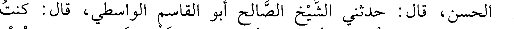
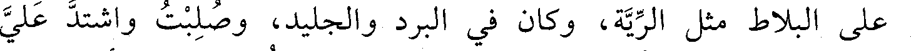
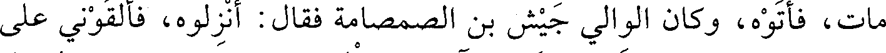
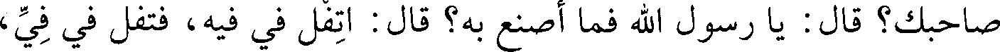
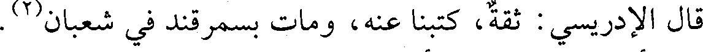
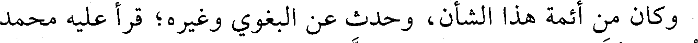
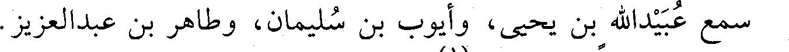

File: 001132.gt.txt (if the image is defective, simply delete all Arabic text and the line will be excluded)

الحسن قال: حدثني الشيخ الصالح أبو القاسم الواسطي، قال: كنت
File: 001133.gt.txt (if the image is defective, simply delete all Arabic text and the line will be excluded)

مجاورا ببيت المقدس، فأمروا في أول رمضان بقطع التراويح، فصحت أنا
File: 001134.gt.txt (if the image is defective, simply delete all Arabic text and the line will be excluded)

وعبدالله الخادم: واإسلاماه وامحمداه، فأخذني الأعوان وحبست، ثم جاء
File: 001135.gt.txt (if the image is defective, simply delete all Arabic text and the line will be excluded)

الكتاب من مصر بقطع لساني فقطع، فبعد أسبوع رأيت النبي صعلم في النوم
File: 001136.gt.txt (if the image is defective, simply delete all Arabic text and the line will be excluded)

تفل في فمي، فانتبهت ببرد ريق رسول الله صعلم وقد زال عني الألم،
File: 001137.gt.txt (if the image is defective, simply delete all Arabic text and the line will be excluded)

فتوضأت وصليت وعمدت إلى المأذنة فأذنت «الصلاة خير من النوم»،
File: 001138.gt.txt (if the image is defective, simply delete all Arabic text and the line will be excluded)

فأخذوني وحبست وقيدت، وكتبوا في إلى مصر، فورد الكتاب بقطع
File: 001139.gt.txt (if the image is defective, simply delete all Arabic text and the line will be excluded)

لساني، وبضربي خمس مئة سوط، وبصلبي، ففعل بي ذلك، فرأيت لساني
File: 001140.gt.txt (if the image is defective, simply delete all Arabic text and the line will be excluded)

على البلاط مثل الرية، وكان في البرد والجليد، وصلبت واشتد علي
File: 001141.gt.txt (if the image is defective, simply delete all Arabic text and the line will be excluded)

الجليد، فبعد ثلاثة أيام عهدي بالحدائين يقولون: نعرف الوالي أن هذا قد
File: 001142.gt.txt (if the image is defective, simply delete all Arabic text and the line will be excluded)

مات، فأتوه، وكان الوالي جيش بن الصمصامة فقال: أنزلوه، فألقوني على
File: 001143.gt.txt (if the image is defective, simply delete all Arabic text and the line will be excluded)

باب داود، فقوم يترحمون علي وآخرون يلعنوني، فلما كان بعد العشاء
File: 001144.gt.txt (if the image is defective, simply delete all Arabic text and the line will be excluded)

جاءني أربعة فحملوني على نعش ومضوا بي ليغسلوني في دار فوجدوني
File: 001145.gt.txt (if the image is defective, simply delete all Arabic text and the line will be excluded)

حيا، فكانوا يصلحون لي خزيرة بلوز وسكر أسبوعا. ثم رأيت النبي صعلم في
File: 001146.gt.txt (if the image is defective, simply delete all Arabic text and the line will be excluded)

المنام ومعه أصحابه العشرة فقال: يا أبا بكر، ترى ما قد جرى على
File: 001147.gt.txt (if the image is defective, simply delete all Arabic text and the line will be excluded)

صاحبك؟ قال: يا رسول الله فما أصنع به؟ قال: اتفل في فيه، فتفل في في،
File: 001148.gt.txt (if the image is defective, simply delete all Arabic text and the line will be excluded)
(الوفيات)
File: 001149.gt.txt (if the image is defective, simply delete all Arabic text and the line will be excluded)

سنة إحدى وستين وثلاث مئة ومن توفي فيها
File: 001150.gt.txt (if the image is defective, simply delete all Arabic text and the line will be excluded)

1 - أحمد ابن المحدث محمد بن العباس بن نجيح البغدادي، أبو
File: 001151.gt.txt (if the image is defective, simply delete all Arabic text and the line will be excluded)

الحسن، رئيس المعتزلة ببغداد.
File: 001152.gt.txt (if the image is defective, simply delete all Arabic text and the line will be excluded)

ورخه طلحة في ربيع الآخر، وقال: كان رئيس المعتزلة.
File: 001153.gt.txt (if the image is defective, simply delete all Arabic text and the line will be excluded)

2 - أحمد بن محمد بن سعيد بن سهل بن شبرة(1) ، بالمعجمة
File: 001154.gt.txt (if the image is defective, simply delete all Arabic text and the line will be excluded)

والتثقيل، أبو حامد النيسابوري الصيرفي الزاهد الثبت، نزيل سمرقند.
File: 001155.gt.txt (if the image is defective, simply delete all Arabic text and the line will be excluded)

روى عن عمر البجيري، وأبن خزيمة، والسراج.
File: 001156.gt.txt (if the image is defective, simply delete all Arabic text and the line will be excluded)

قال الإدريسي: ثقة، كتبنا عنه، ومات بسمرقند في شعبان(2) .
File: 001157.gt.txt (if the image is defective, simply delete all Arabic text and the line will be excluded)

3 - أحمد بن مسور الأمير.
File: 001158.gt.txt (if the image is defective, simply delete all Arabic text and the line will be excluded)

ولي دمشق للحسن بن أحمد القرمطي المعروف بالسيد عند تغلبة ثانيا
File: 001159.gt.txt (if the image is defective, simply delete all Arabic text and the line will be excluded)

على الشام، وذلك في رمضان. ومات بعد عشرة أشهر، أعنى أحمد(3) .
File: 001160.gt.txt (if the image is defective, simply delete all Arabic text and the line will be excluded)

4 - إبراهيم بن أحمد بن إبراهيم البغدادي البزوري، أبو إسحاق
File: 001161.gt.txt (if the image is defective, simply delete all Arabic text and the line will be excluded)

المقرىء.
File: 001162.gt.txt (if the image is defective, simply delete all Arabic text and the line will be excluded)

قرأ على إسحاق الخزاعي، والحسن بن الحسين الصواف، وأحمد بن
File: 001163.gt.txt (if the image is defective, simply delete all Arabic text and the line will be excluded)

فرح، وجماعة.
File: 001164.gt.txt (if the image is defective, simply delete all Arabic text and the line will be excluded)

وكان من أئمة هذا الشأن، وحدث عن البغوي وغيره؛ قرأ عليه محمد
File: 001165.gt.txt (if the image is defective, simply delete all Arabic text and the line will be excluded)

بن عمر بن بكير، وعلي بن محمد الحذاء، وعبدالباقي بن الحسن.
File: 001166.gt.txt (if the image is defective, simply delete all Arabic text and the line will be excluded)

مات في ذي الحجة(4) .
File: 001167.gt.txt (if the image is defective, simply delete all Arabic text and the line will be excluded)

193
File: 001168.gt.txt (if the image is defective, simply delete all Arabic text and the line will be excluded)

100 - أحمد بن محمد بن أيوب، أبو بكر الفارسي الواعظ
File: 001169.gt.txt (if the image is defective, simply delete all Arabic text and the line will be excluded)

المفسر، نزيل نيسابور.
File: 001170.gt.txt (if the image is defective, simply delete all Arabic text and the line will be excluded)

كان له أتباع ومريدون، وعظ ببخارى فكثر جمعه، وخاف الحنفية من
File: 001171.gt.txt (if the image is defective, simply delete all Arabic text and the line will be excluded)

تغلبه عليهم. كان يحضر مجلسه نحو عشرة آلاف. كتب عنه أبو عبد الله
File: 001172.gt.txt (if the image is defective, simply delete all Arabic text and the line will be excluded)

الحاكم.
File: 001173.gt.txt (if the image is defective, simply delete all Arabic text and the line will be excluded)

101 - أحمد بن محمد بن فرحون، أبو القاسم الأندلسي.
File: 001174.gt.txt (if the image is defective, simply delete all Arabic text and the line will be excluded)

سمع عبيدالله بن يحيى، وأيوب بن سليمان، وطاهر بن عبدالعزيز.
File: 001175.gt.txt (if the image is defective, simply delete all Arabic text and the line will be excluded)

وحدث. وكان ضابطا، وفيه لين(1).
File: 001176.gt.txt (if the image is defective, simply delete all Arabic text and the line will be excluded)

102 - أحمد بن محمد بن المؤمل بن الحسن بن عيسى
File: 001177.gt.txt (if the image is defective, simply delete all Arabic text and the line will be excluded)

الماسرجسي النيسابوري، أبو الحسن.
File: 001178.gt.txt (if the image is defective, simply delete all Arabic text and the line will be excluded)

من بيت علم ورواية، وكان رجلا صالحا. روى عن جده، وأبي
File: 001179.gt.txt (if the image is defective, simply delete all Arabic text and the line will be excluded)

عمرو أحمد بن محمد الحيري. وعنه الحاكم.
File: 001180.gt.txt (if the image is defective, simply delete all Arabic text and the line will be excluded)

103 - أحمد بن مسلم بن شعيب، أبو العباس المديني الأديب.
File: 001181.gt.txt (if the image is defective, simply delete all Arabic text and the line will be excluded)

سمع علي بن سعيد العسكري، ومحمد بن جرير الطبري. وعنه ابن